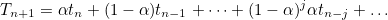
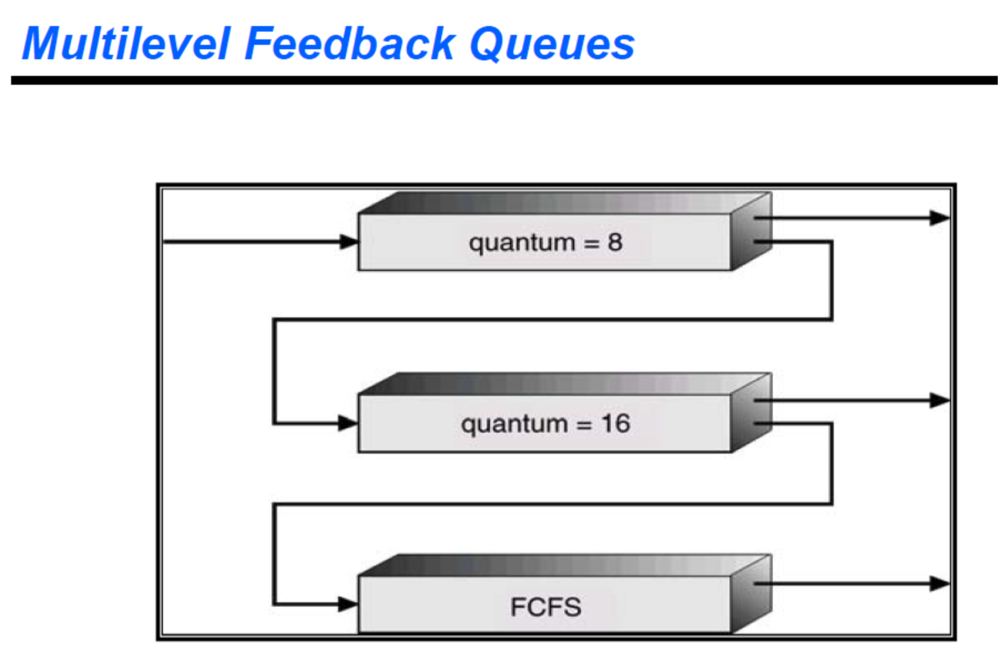

스케쥴링의 성능 평가
CPU 이용률
CPU 이용률은 전체 시간 중에서 CPU가 일을 한 시간의 비율이다. CPU가 일을 하지 않고 휴면(idle) 상태에 머무르는 시간을 최소화하는 것이 스케쥴링의 중요한 목표이다.
처리량(throughput)
처리량은 주어진 시간 동안 CPU 버스트를 완료한 프로세스의 개수를 나타낸다. 즉, CPU를 원하는 프로세스들 중 몇 개가 원하는 만큼의 CPU를 사용하고 CPU 버스트를 끝내서 준비 큐로부터 나갔는지를 측정하는 것이다. 보다 많은 프로세스가 CPU 작업을 완료하기 위해서는 CPU 버스트가 짧은 프로세스에게 우선적으로 CPU를 할당하는 것이 유리하다.
소요시간(turnaround time)
소요시간은 프로세스가 CPU를 요청한 시점부터 자신이 원하는 만큼 CPU를 다 쓰고 CPU 버스트가 끝날 때까지 걸린 시간을 말한다. 즉, 준비 큐에서 기다린 시간과 실제로 CPU를 사용한 시간의 합을 뜻한다. 소요시간은 CPU 버스트마다 별도로 측정된다.
대기시간(waiting time)
대기시간은 CPU 버스트 기간 중 어떤 프로세스가 준비 큐에서 CPU를 얻기 위해 기다린 시간의 합을 뜻한다. 시분할 방식으로 CPU를 사용하기 때문에 한 번의 CPU 버스트 중에도 준비 큐에서 CPU를 얻기 위해 기다리는 일이 여러번 일어나게 된다. 이 시간들을 전부 합한 것이 대기시간이다.
응답시간(response time)
응답시간은 프로세스가 준비 큐에 들어온 후 처음으로 CPU를 획득하기까지 기다린 시간을 뜻한다. 대기시간과 다르게 준비큐에 들어온 직후부터 처음으로 CPU를 얻을때까지의 시간만을 측정한다. 타이머 인터럽트가 빈번히 발생할수록 각 프로세스가 CPU를 점유하고 있는 시간이 짧고 처음으로 CPU를 얻기까지 기다리는 시간이 짧아지므로 응답시간이 향상된다. 이를 통해 알 수 있듯 응답시간은 대화형 시스템에 적합한 척도이다.
스케쥴링 알고리즘
선입선출 스케쥴링(First-Come First-Served: FCFS)
선입선출 스케쥴링은 준비큐에 들어온 순서대로 CPU를 할당하는 방식을 말한다. CPU 버스트가 짧은 프로세스가 긴 프로세스보다 나중에 도착해 오랜 시간을 기다려야 하는 현상을 콘보이 현상(Convoy effect)라고 한다.
최단작업 우선 스케쥴링(Shortest-Job First: SJF)
최단작업 우선 스케쥴링 알고리즘은 CPU 버스트가 가장 짧은 프로세스에게 제일 먼저 CPU를 할당하는 방식이다. SJF 스케쥴링 알고리즘은 평균 대기시간을 가장 짧게 하는 최적 알고리즘으로 알려져있다. SJF 알고리즘은 비선점형 방식(nonpreemptive)과 선점형 방식(preemptive)으로 구현될 수 있는데 비선점형 방식은 CPU를 획득하면 자진 반납하기 전까지 CPU를 뺏지 않는 방식이다. 반면 선점형 방식은 현재 CPU를 점유하고 있는 프로세스보다 CPU 버스트가 더 짧은 프로세스가 도착하면 CPU를 빼앗는 방식이다. 이러한 SJF의 선점형 구현 방식을 SRTF(Shortest Remaining Time First)라고 부른다.
프로세스들이 준비 큐에 도착하는 시간이 불규칙적인 환경에서는 SRTF 방식이 프로세스들의 평균 대기시간을 최소화하는 최적의 알고리즘이 된다. 반면 일련의 프로세스들이 한꺼번에 준비 큐에 도착하고 그 후에 추가적인 프로세스가 도착하지 않는 환경에서는 선점형 방식과 비선점형 방식의 성능차이가 없다. 하지만 일반적인 시분할 환경에서는 중간중간 새로운 프로세스가 도착하는 경우가 있으므로 SRTF 방식이 평균 대기시간을 가장 많이 줄일 수 있는 방식이다.
위에서 설명한 SJF 기법을 이용하여 스케쥴링을 하기 위해서는 프로세스의 CPU 버스트 시간을 미리 알고 있다는 전제가 있어야 한다. 그러나 현실에서 이는 불가능에 가까우므로 예측을 통해 CPU 버스트 시간을 구한다. (n+1)번째 CPU 버스트의 예측시간은 n번째에 예측한 CPU 버스트 시간과 측정해서 얻은 실제 CPU 버스트 시간을 부분적으로 합하여 얻어낸다. 이 때 부분적으로 합하는 과정에서 필요한 각각의 비율(모든 비율을 합하면 1이 나온다.)은 매개변수로 지정해줘야한다. 이를 풀어서 식으로 작성하면 다음과 같다.

SJF 알고리즘은 평균 대기시간을 최소화하는 알고리즘이지만 시스템에서 단순히 평균치를 줄이는 것이 최선이 아닌 경우도 있다. CPU 버스트가 짧은 프로세스에게만 CPU를 할당할 경우 CPU 버스트가 긴 프로세스는 준비 큐에서 무한히 기다리는 상황이 발생할 수도 있기 때문이다. 이러한 현상을 기아 현상(starvation) 이라 한다.
우선순위 스케쥴링(priority scheduling)
우선순위 스케쥴링이란 준비 큐에서 기다리는 프로세스들 중 우선순위가 가장 높은 프로세스에게 제일 먼저 CPU를 할당하는 방식을 말한다. 우선순위값(priority numeber)이 작을수록 높은 우선순위를 가지며 우선순위를 결정하는 방식은 다양할 수 있다. SJF 기법과 마찬가지로 우선순위 스케쥴링은 기아 현상을 피하기 어려운데 이를 해결하기 위해 노화(aging) 기법을 사용할 수 있다. 노화 기법이란 기다리는 시간이 길어지면 우선순위를 조금씩 높여 언젠가는 CPU를 할당받을 수 있도록 해주는 기법이다.
라운드 로빈 스케쥴링(Round Robin Scheduling)
라운드 로빈 스케쥴링은 시분할 시스템의 성질을 가장 잘 활용한 스케쥴링 기법이다. 각 프로세스가 CPU를 연속적으로 사용할 수 있는 시간이 특정 시간으로 제한되며, 이 시간이 경과하면 다른 프로세스에게 CPU를 할당한다. 이때 각 프로세스마다 한 번에 CPU를 연속적으로 사용할 수 있는 최대시간을 할당시간(time quantum)이라 부르며 할당시간이 너무 길면 FCFS에서의 문제점이 그대로 나타나게 되고 너무 짧으면 문맥교환으로 인한 오버헤드가 지나치게 커지므로 적절한 값을 할당해주어야 한다.
라운드 로빈 스케쥴링은 이질적인 프로세스가 같이 실행되는 환경에서 효과적이다. n개의 프로세스가 q라는 할당 시간을 가지고 라운드 로빈 스케쥴링을 적용하였다고 가정하면 (n-1)q 시간 안에 반드시 CPU를 할당받는 것이 보장된다. 이와 같은 방식은 대화형 프로세스의 빠른 응답시간을 보장할 수 있다. 각 프로세스의 CPU 버스트 시간에 비례하는 대기시간이 소요되기 때문에 CPU 버스트가 긴 프로세스에게 불이익이 가지도 않는다.
멀티레벨 큐
멀티레벨 큐
멀티레벨 큐란 준비 큐를 여러 개로 분할해 관리하는 스케쥴링 기법이다. 어떤 줄을 우선적으로 처리할 것인지, 프로세스가 도착했을 때 어떤 줄에 줄을 세워야 할 것인지 등을 결정하는 메커니즘이 필요하다. 성격이 다른 프로세스들을 별도로 관리하고 프로세스의 성격에 맞는 스케쥴링 기법을 적용하기 위해 멀티레벨 큐가 사용된다.
전위(foreground) 큐와 후위(background) 큐
멀티레벨 큐에서 준비 큐는 대화형 작업을 담기 위한 전위 큐와 계산 위주의 작업을 담는 후위 큐로 분할하여 운영한다. 전위 큐의 경우에는 응답시간을 짧게 하기 위해 라운드 로빈 기법을 사용하는 반면 후위 큐의 경우에는 응답시간이 큰 의미가 없으므로 FCFS 기법을 통해 문맥교환 오버헤드를 줄이도록 한다.
큐 자체에 대한 스케쥴링
멀티레벨 큐에서는 준비 큐가 여러개이므로 이 큐들에 대한 스케쥴링도 필요하다. 큐에 우선순위를 할당하여 우선순위가 높은 큐를 먼저 서비스하고 우선순위가 낮은 큐는 우선순위가 높은 큐가 비어있을 때만 서비스하게 된다. 이와는 다르게 타임 슬라이스(time slice) 방식을 택하는 경우도 있다. 타임 슬라이스 방식은 각 큐에 CPU 시간을 적절히 비율로 할당해 분배하는 방식으로 기아 현상을 해결할 수 있다.
멀티레벨 피드백 큐
멀티레벨 피드백 큐
멀티레벨 피드백 큐는 프로세스를 여러 큐에 줄을 세운다는 점에서 멀티레벨 큐와 동일하지만 프로세스가 하나의 큐에서 다른 큐로 이동이 가능하다는 차이점이 있다. 노화 기법을 사용하여 우선순위가 높은 큐로 프로세스를 승격시키기는 등의 작업이 가능하다.
운영 방식
멀티레벨 피드백 큐의 대표적인 방식은 아래의 그림과 같다.

그림에서 상위로 갈수록 우선순위가 높은 큐이며 상위 두개의 큐는 라운드 로빈 방식을, 가장 하단의 큐는 FCFS 방식을 사용한다고 가정하자. 모든 프로세스는 도착시 최상위 큐에가서 줄을 선다. 만약 할당시간(quantum)동안 작업이 끝나지 않았다면 하위 큐로 이동하여 순서를 기다린다. 이러한 방식을 사용하면 프로세스의 CPU 작업시간을 다단계로 분류함으로써 작업시간이 짧은 프로세스일수록 더욱 빠른 서비스가 가능해지고 작업시간이 긴 프로세스는 문맥교환으로 인한 오버헤드를 최소화 시키며 작업시킬 수 있다.
다중처리기 스케쥴링
다중처리기 시스템
다중처리기 시스템(multi-processor-system)이란 CPU가 여러 개인 시스템을 말한다. CPU가 여러 개이므로 프로세스들을 줄을 세운 뒤 각 CPU가 알아서 다음 프로세스를 꺼내가도록 지시한다. 마치 여러 개의 은행 창구에서 손님을 순서대로 맡아 처리하는 것과 유사하다. 하지만 반드시 특정 CPU에서 수행되어야 하는 프로세스가 있는 경우에는 문제가 더 복잡해진다. 이런 상황에는 각 CPU별로 프로세스를 줄세워 문제를 해결할 수 있다.
다중처리기 스케쥴링
여러 줄로 줄을 세우는 경우 일부 CPU에 작업이 편중되는 현상이 발생할 수 있다. 다중처리기 스케쥴링에서는 이를 해결하기 위해 CPU별 부하를 적절히 분산되도록 관리한다. 이를 부하균형(load balancing) 메커니즘이라 하며 대칭형 다중처리(symmetric)와 비대칭형 다중처리(asymmetric)로 분류할 수 있다. 대칭형 다중 처리는 각 CPU가 각자 알아서 스케쥴링르 결정하는 방식이고, 비대칭형 다중처리는 하나의 CPU가 모든 CPU의 스케쥴링 및 데이터 접근을 책임지고 나머지 CPU는 그에 따라 움직이는 방식을 말한다.
실시간 스케쥴링
Hard real-time system, Soft real-time system
하드 리얼 타임 시스템은 반드시 지켜져야 하는 데드라인이 존재하는 프로그램에 사용된다. 미사일 발사, 원자로 제어 등 정확한 시간을 지킬 것이 요구되는 경우가 대표적이다. 반면 소프트 리얼 타임 시스템은 데드라인이 존재하지만 데드라인을 지키지 못하더라도 위험한 상황이 발생하지 않는 시스템이다. 위에서 살펴본 스케쥴링 방식들은 데드라인이 정해져 있지 않았지만 실시간 환경에서의 스케쥴링은 평균적으로 빠른 서비스보다도 데드라인을 지키는 서비스가 더 중요할 수도 있다. 이런 경우에는 보통 EDF(Earliest Deadline Frist) 스케쥴링을 사용한다.
스케쥴링 알고리즘의 평가
큐잉모델
스케쥴링 알고리즘의 성능을 평가하는 방식 중 하나인 큐잉모델은 주로 이론가들이 확률분포를 통해 프로세스들의 도착률과 CPU 처리율을 바탕으로 각종 성능지표인 CPU 처리량, 프로세스의 평균 대기시간 등을 구하여 성능을 평가하는 방식이다.
구현 및 실측
구현 및 실측은 큐잉모델과는 반대로 구현가들이 수행할 수 있는 방식으로 실행시간을 직접 측정하여 알고리즘의 성능을 평가하는 방식이다.
시뮬레이션
시뮬레이션은 실제 시스템에 구현해 수행시켜보는 것이 아닌 가상으로 CPU 스케쥴링 프로그램을 작성한 후 프로그램의 CPU 요청을 입력값으로 넣어 어떤 결과가 나온느지를 확인하는 방법이다 . 입력값은 가상의 값일 수도 있고 실제 시스템에서의 CPU 요청 내역을 추출하여 사용할 수도 있다. 이때 시스템에서 추출한 입력값을 트레이스(trace)라고 한다.